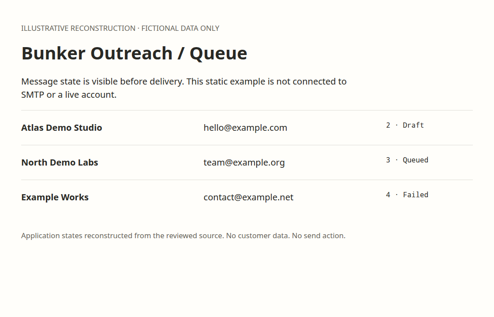

FEATURED PROJECT / BACKEND & WORKFLOW ENGINEERING
Bunker Outreach
From a list of prospects to an inspectable delivery workflow.
Explore the public source ↗ · Run the fictional demo ↗
A self-hosted application combining discovery, message preparation and SMTP delivery. This case focuses on its backend: user-scoped PostgreSQL data, authenticated API boundaries and explicit queue state.
The problem: separate finding, preparing and sending
Prospecting creates several kinds of state: which contacts exist, which messages are ready and what happened when delivery was attempted. Combining those actions into one opaque operation makes errors difficult to inspect.
Bunker separates discovery jobs from an email worker with drafting and sending modes. A PostgreSQL-backed status field connects preparation, queue visibility and delivery outcomes. The engineering contribution explored here is that data and workflow boundary; this is a source-based case, not a measured business-results claim.
One application, distinct responsibilities
- Web client → Express API → JWT authentication middleware
- Authenticated user ID → PostgreSQL settings and a dedicated leads table
- Discovery job → external discovery service → stored leads
- Email worker → drafting or sending mode → persisted message state
- SMTP adapter → provider response → success or failure recorded in PostgreSQL
Illustrative identities: user 101 → leads_user_101; user 202 → leads_user_202. These are fictitious examples, not production records.
The background worker is an in-process loop scheduled with timers. PostgreSQL persists contact and message state; it is not a separate durable message broker. A provider accepting a message is distinct from that message reaching an inbox.
Make the user's data boundary explicit
The leads route uses authentication middleware and passes req.user.id to the database function. The table-name helper validates that ID as a safe positive integer before constructing the dedicated table name. Values such as pagination parameters are bound separately.
export function getUserLeadsTableName(userId) {
const cleanId = Number(userId);
if (!Number.isSafeInteger(cleanId) || cleanId <= 0) throw new Error('ID de usuário inválido para tabela de leads');
return `leads_user_${cleanId}`;
}db.js · lines 241–245 ↗ · public export bb97b213a5b9. Exact excerpt; surrounding code omitted.
export async function getLeads(userId, limit = 100, offset = 0) {
const tableName = await ensureUserLeadsTable(userId);
const res = await pool.query(`
SELECT * FROM ${tableName}
ORDER BY last_update DESC
LIMIT $1 OFFSET $2
`, [limit, offset]);
return res.rows;
}db.js · lines 436–444 ↗ · public export bb97b213a5b9. Exact excerpt; surrounding code omitted.
This is application-mediated isolation through per-user tables, not PostgreSQL row-level security. It makes ownership visible in the access path, at the cost of more tables, indexes and migration work. Consistent use of the authenticated ID remains essential; these excerpts alone do not prove every endpoint is authorized correctly.
Model what happens before and after SMTP
The sending branch searches the user's queue for status 3. A successful mail-adapter result writes status 1; a failed result writes status 4. Drafting and sending are separate modes.
// PHASE 2: SENDING (SMTP Delivery)
if (worker.status === 'sending') {
const queueLeads = await getQueueLeads(userId);
const approvedLead = queueLeads.find(l => l.email_sent === 3);server.js · lines 359–362 ↗ · public export bb97b213a5b9. Exact excerpt; surrounding code omitted.
if (mailResult.success) {
await saveDraft(userId, approvedLead.email, approvedLead.draft_subject, approvedLead.draft_body, null, 1); // Status 1 = Sent
worker.lastSentTime = Date.now();server.js · lines 404–406 ↗ · public export bb97b213a5b9. Exact excerpt; surrounding code omitted.
} else {
await saveDraft(userId, approvedLead.email, approvedLead.draft_subject, approvedLead.draft_body, mailResult.error, 4); // Status 4 = Failedserver.js · lines 415–416 ↗ · public export bb97b213a5b9. Exact excerpt; surrounding code omitted.
The mail adapter awaits Nodemailer's sendMail and returns a success flag with the provider's message ID, or an error result. The worker uses that result to update the stored message. This is observable application state, not proof of inbox delivery.

What this design buys—and what I would change next
Separate modes do not imply mandatory human review
The drafting branch saves generated messages directly as status 3, which the sending branch considers approved/queued. The implementation also has a manual send-now endpoint. A mandatory human-approval gate would require a distinct transition; it is not guaranteed by this design.
Persisted state does not make the loop durable
The timer and last-send timestamp live in memory. The sending worker applies a 30-minute cooldown between successful sends within that worker's lifetime; the manual send-now path is separate. Restart recovery and a single system-wide rate limit are not established here.
Selecting a queued message is not an atomic claim
The excerpt finds a queued row and sends it before saving the outcome. It does not show a transactional claim or idempotency key. Concurrent workers, retries or a crash after SMTP acceptance could produce duplicate attempts. An atomic claim, recovery policy and idempotency design would be my next reliability work.
Table-per-user ownership has an operational cost
Dedicated tables keep each query's ownership concrete but increase schema-management work. I would test migrations and cross-user access systematically, and evaluate a shared table with enforced ownership policies if the user count grows.
Evidence and scope
The excerpts above are short, unchanged selections from a fixed implementation snapshot: bb97b213a5b9. Reviewed paths include db.js, auth.js, server.js and mailer.js. The original repository remains private. A reviewed public export contains the application and a reproducible fictional demo. The snippets on this page match that public commit. Export sanitization and demo-mode changes are documented in its README and provenance notes; no private source links, credentials, configuration values or customer records are included.
This review verifies the described source paths and transitions. It does not claim production load testing, a security certification, sole authorship or measured conversion gains. The UI demonstration uses invented contacts and never contacts a mail provider.